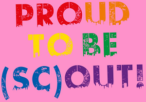
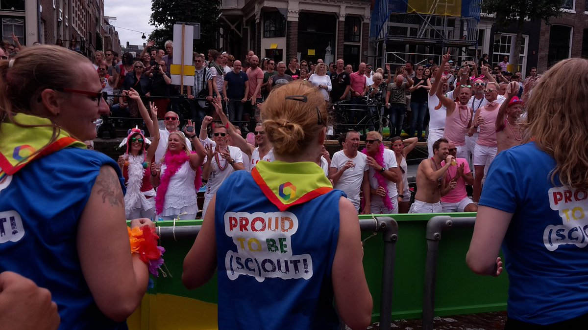

Scouting wint prijs beste statement Canal Parade 2017
Zaterdag 5 augustus vaarde Scouting Nederland voor het eerst mee met de Canal Parade, onder de slogan Proud be to (sc)out! Scouting staat open voor iedereen en vindt het belangrijk dat iedereen binnen Scouting zichzelf kan zijn. Dat droegen de jonge deelnemers (14-21 jaar) op de boot uit door mee te varen. Na afloop van de Canal Parade koos de jury Scouting Nederland als winnaar van de prijs beste statement.
Diversiteit binnen Scouting
Iedereen kan meedoen aan het Scoutingspel. Scouting Nederland wil als afspiegeling van de samenleving bijdragen aan de persoonlijke ontwikkeling van alle leden door een veilige omgeving te bieden, waar ruimte is voor diversiteit. Scouting is een plek waar je je welkom voelt en waar je trots kunt zijn op wie je bent. Scouting zet zich actief in om deze boodschap binnen en buiten Scouting uit te dragen.
Juryrapport
De jury koos na afloop van de Canal Parade de boot van Scouting Nederland als winnaar van de prijs voor beste statement. Cornald Maas, voorzitter van de jury: "Hun boot bracht de boodschap over dat jonge LHBTI’s ook bij die organisatie veilig zijn." Door het winnen van deze prijs ontvangt Scouting ook een wildcard voor de Canal Parade in 2018.